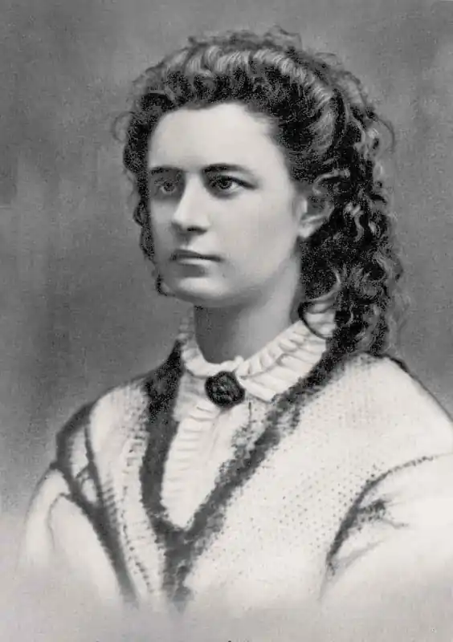

Лідія Емілі Флорентін Яннсен, більше відома під псевдонімом Лідія Койдула — естонська поетеса, публіцистка та драматургиня.
Лідія Яннсен народилася 24 грудня 1843 року у селі Вяндру, повіт Пярну, Ліфляндської губернії (зараз центральна Естонія) у родині журналіста й просвітителя Йохана Яннсена. Сім'я переїхала до містечка неподалік Пярну в 1850 році, де в 1857 році батько почав видавати першу місцеву газету естонською мовою, а Лідія пішла до німецької школи.
В 1864 році Яннсени переїхали до університетського міста Тарту, найпрогресивнішого міста Естонії. Націоналізм, у тому числі публікації мовою нацменшин, був дуже гострою темою в Російській імперії, але указ царя Олександра ІІ був відносно ліберальним, і батькові Лідії вдалося переконати імперську цензуру дозволити йому випустити першу національну естономовну газету в 1864. Обидві, місцева та національна, газети називалися "Кур'єр". Лідія Яннсен писала в обидвох газетах, а також публікувала свої твори окремо. Псевдонім "Койдула" естонською означає "ранкова зоря". У 1873 році Лідія одружилася з латвійським військовим лікарем Едуардом Мікелсоном та переїхала до Кронштадта, штаб-квартири російських морських збройних сил біля Санкт-Петербурга. Народила трьох дітей. У 1876—1878 роках відвідала з чоловіком Бреслав, Страсбург та Відень. Прожила в Кронштадті 13 років, їздячи на літо до Естонії, але туга за батьківщиною не полишила її. Лідія Яннсен померла 11 серпня 1886 року після тривалої та тяжкої боротьби з раком молочної залози. Останньою поемою, яку вона написала, була "Естонії, перед смертю".